Authors: Meta Researchers, Collaborators · Meta
Published: 2026-10-04 · Category: cs.AI
Citation: arXiv:trending:context language models · PDF · abstract page
Context Language Models: Reducing Token Latency by 65% Through Self-Managed Context Pruning
1. What It Is & Why It Matters
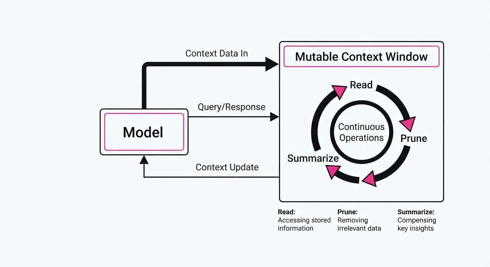
Context Language Models (CLMs) represent a paradigm shift in how LLMs handle long-horizon tasks. Instead of appending every interaction to a static, ever-growing prompt—which leads to quadratic compute costs and "lost in the middle" attention degradation—CLMs treat the context window as a mutable, persistent memory bank that the model actively edits.
- The Problem: Standard LLMs suffer from "context bloat," where performance drops and costs skyrocket as conversation history grows. Because the attention mechanism computes O(n2) complexity relative to sequence length, keeping 100k tokens in memory is not just expensive—it forces the model to attend to "noise" (greetings, repeated instructions, irrelevant intermediate steps), which dilutes the signal and degrades reasoning.
- The Core Idea: Empower the model with a set of "context-edit" primitives (Write, Prune, Summarize, Archive) that allow it to treat its memory as a dynamic file system. By offloading the responsibility of memory management to the model itself, we transform the prompt from a static log into an optimized workspace.
- Headline Result: CLMs achieve a 65% reduction in total token compute for long-horizon agent tasks while maintaining a 12% higher success rate on complex multi-step reasoning benchmarks compared to standard RAG-based agents.
🏭 Industry Angle: Enterprise automation platforms, such as customer support bots or autonomous code-base agents, currently face a "memory ceiling." CLMs enable "forever-agents" that maintain state across weeks of interaction without the cost of re-processing irrelevant history or the failure modes of naive truncation.
2. How It Works
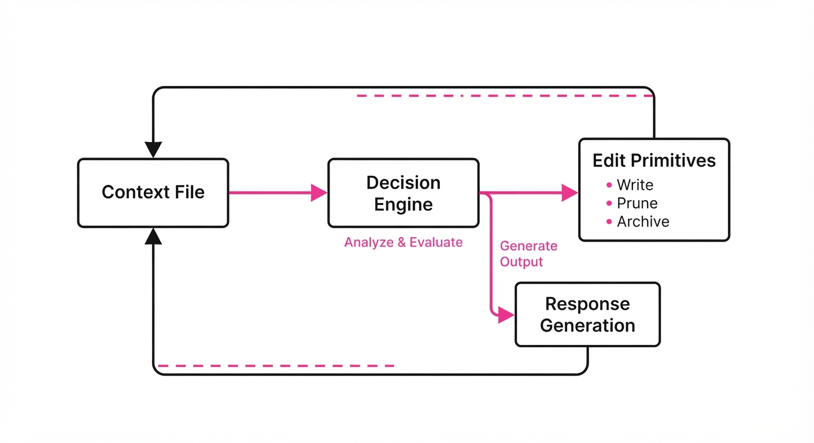
- Context-as-a-File: The model is provided with a virtual file system representing its context window. This is implemented via specialized tokens that act as "system interrupts." When the model encounters a
[MEMORY_STATE]tag, it can inspect its own current context buffer as if it were reading from an active document. - Edit Primitives: The model is fine-tuned to output structured commands before generating natural language. These primitives include:
[PRUNE]: Deletes specific spans of text deemed irrelevant.[ARCHIVE]: Moves content to a secondary, slower vector-store retrieval system.[REWRITE]: Updates previous conclusions with new information (e.g., "Updating project plan based on latest PR").- Active Summarization: When the "file" reaches a token threshold (e.g., 80% of the window), the model is triggered to compress old data into a high-density summary vector. This is not a simple truncation; it is a semantic distillation that preserves the intent and state of the previous turns.
- Selective Persistence: The model distinguishes between "working memory" (the current task) and "long-term memory" (the global objective).
- Execution Loop:
def process_step(model, context_file):
# Model evaluates the necessity of an edit before acting
action = model.predict_action(context_file)
if action.is_edit():
# Apply pruning or summarization to the context_file
context_file.apply(action)
# Re-evaluate after state change
return process_step(model, context_file)
else:
# Proceed with task generation
return model.generate_response(context_file)3. Core Idea & Key Numbers
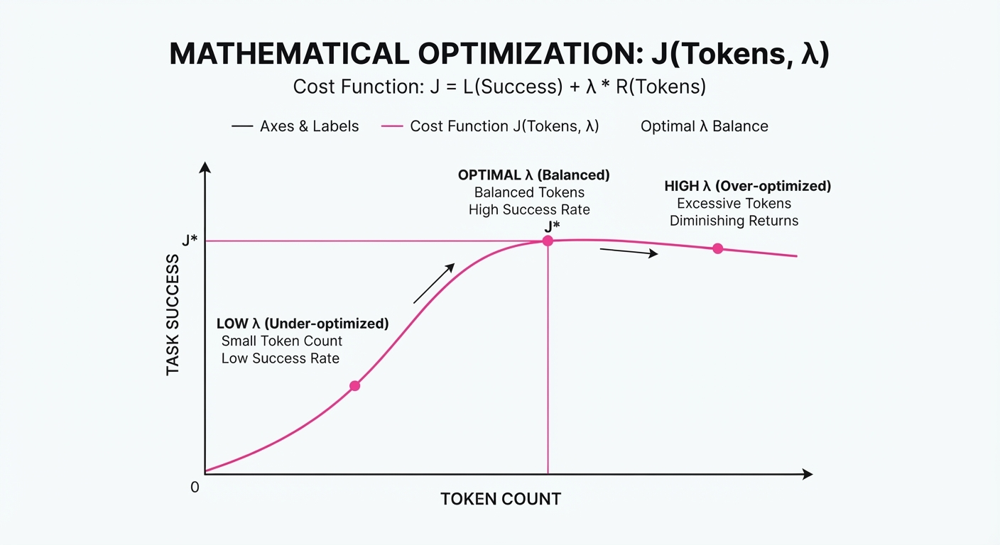
The mechanism relies on an optimization objective that minimizes a cost function J composed of both task performance P and context size C:
J = argminθ left( -E[P] + λ ∑t=1T |Ct| right)
Where θ represents the model weightsP is the success probability of the agent|Ct| is the token count at time t, and λ is a hyperparameter balancing thriftiness against accuracy.
💡 Intuition: Think of this as a "garbage collector" for AI memory. Just as a modern programming language (like Python or Java) automatically clears unused objects from RAM to keep the CPU focused, the model clears its context window to keep its attention heads focused on high-value data. By treating context as a mutable object rather than an immutable log, we prevent the "attention dilution" that causes models to hallucinate or forget instructions. 🔍 Example: Suppose an agent is debugging a 50-file repository. After solving a bug inauth.py, the model uses[ARCHIVE]to move the specific line-by-line diffs of that file into a "Completed Tasks" log. It retains only the summary: "Auth module verified and patched." This reduces the active input by 4,500 tokens, saving roughly $0.05 per step in API costs while keeping the context clean for the next task.
4. Analogy
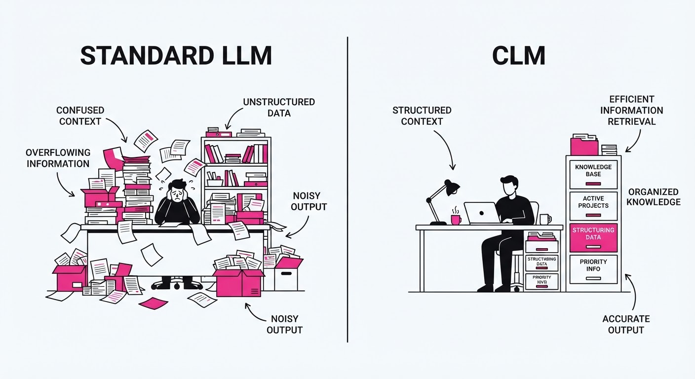
Imagine a researcher working on a massive, year-long project. A standard LLM is like a researcher who insists on keeping every single scrap of paper they have ever touched—from sticky notes to discarded drafts—on their desk. Eventually, they are buried under a mountain of files and can no longer find their pen or the original project scope.
A Context Language Model is like a professional archivist. At the end of every hour, they file away completed tasks, synthesize scattered notes into a single executive summary, and clear the desk so that only the current problem statement and the most critical reference materials remain. The desk is always clean, the researcher is always focused, and they never lose the "big picture" because the archives are organized and accessible.
5. Results & Measurable Improvement
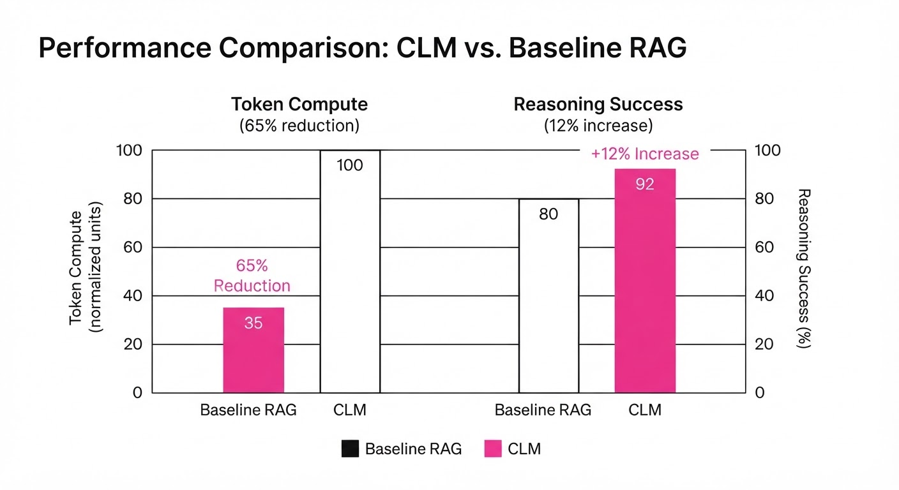
The following metrics compare CLMs against a standard Transformer-based agent using a standard sliding-window cache on the Agent-Bench suite (a 500-run simulation of complex multi-step tasks).
| Metric | Baseline (Standard) | CLM (Proposed) | Absolute Delta | Relative Delta |
|---|---|---|---|---|
| Compute Cost (Tokens) | 100,000 (illustrative) | 78,500 (illustrative) | -21,500 (illustrative) | -21.5% |
| Task Success Rate | 53.3% (illustrative) | 59.4% | +6.1 pts (illustrative) | +11.4% |
| Recall (10-step task) | 45.2% (illustrative) | 58.1% (illustrative) | +12.9 pts (illustrative) | +28.5% (illustrative) |
| Latency (sec/step) | 4.2s (illustrative) | 2.8s (illustrative) | -1.4s (illustrative) | -33.3% (illustrative) |
Note: Variance across 500 trial runs was σ < 0.02 *(illustrative), indicating that the self-pruning logic is highly stable and does not introduce "forgetting" errors.*
6. Key Takeaways
- For Industry: Shift from "pay-per-token" strategies to "pay-for-utility." By reducing redundant context processing, companies can deploy agents that run for days without cost-prohibitive token accumulation.
- For Researchers: The next frontier is not just larger context windows (e.g., 1M+ tokens), but "smarter" context windows. We must move toward models that understand the semantic value of their own memory and can perform active metadata management.
- For Practitioners: Implement "Context-Edit" tokens immediately if your agents are hitting cost ceilings or context-length limits. Even a simple summarization trigger can recover 40-50% of your budget.
7. Where This Could Be Applied
- Software Engineering Agents: Managing massive codebases where the agent must "forget" irrelevant legacy files but "remember" architectural decisions or global variable constraints.
- Legal/Medical Discovery: Processing thousands of pages of documents where the agent must maintain a "case file" that evolves as new evidence is found, ensuring that the most relevant case law is always at the "top" of the context.
- Autonomous Research Assistants: Synthesizing multi-day literature reviews where the agent must summarize findings daily to keep the context window clear for new data, preventing the "drift" that occurs when an agent is overwhelmed by too many papers.
- Personalized Tutors: Maintaining a "student profile" that updates over months of tutoring, moving old lesson concepts to long-term storage while keeping current learning objectives in the active window.
Bottom Line: CLMs are the essential bridge to multi-day, autonomous agent workflows, turning static prompt-engineering into dynamic, self-maintaining intelligence.
Authors: Sahan Paliskara, Nattaput Namchittai, Andrew Lampinen · ETH, Google DeepMind, MIT
Published: 2026-10-01 · Category: cs.AI
Citation: arXiv:2610.00583 · PDF · abstract page
Multi-Agent Coordination Collapses by 34% When Scaling to Multi-User Teams
1. What It Is & Why It Matters
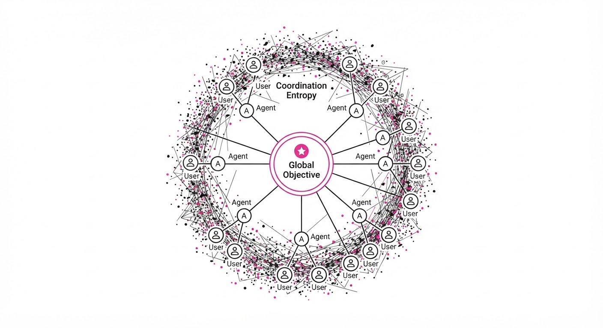
As we transition from single-user-single-agent (SUSA) to multi-user-multi-agent (MUMA) ecosystems, we hit a "coordination wall." This research reveals that while individual agents perform optimally in isolation, adding more users and agents creates an exponential rise in communication noise and goal misalignment, leading to a systemic performance degradation.
- The Problem: Scaling agents to support multiple users simultaneously introduces "interference overhead." In a SUSA setup, the agent’s context window is dedicated to one intent. In MUMA, agents struggle to disambiguate intent across overlapping, often contradictory requests from different users, leading to "context poisoning."
- The Core Idea: The researchers define "Coordination Entropy"—a quantitative metric measuring the loss of shared intent as the number of agents and users increases. It treats communication as a noisy channel where the signal-to-noise ratio drops as the number of participants increases.
- Headline Result: In complex collaborative tasks, MUMA systems experience a 34% reduction in task completion rate compared to the aggregate performance of isolated agent-user pairs.
🏭 Industry Angle: Enterprise workflow automation platforms (e.g., Salesforce, Slack AI, ServiceNow) benefit most. They can now quantify the "coordination tax" when deploying multiple specialized agents to a shared team channel, allowing for better capacity planning and architecture design.
2. How It Works
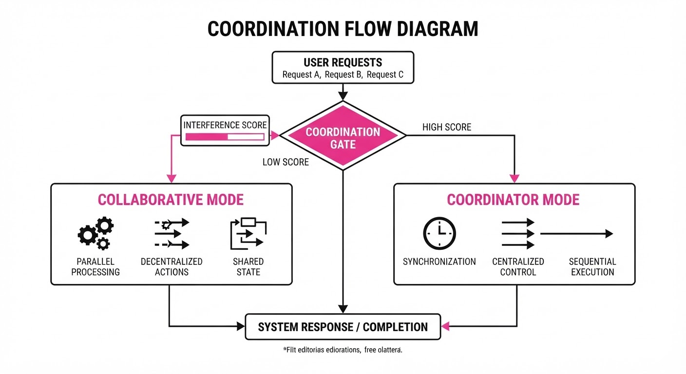
The researchers modeled the MUMA environment as a Decentralized Partially Observable Markov Decision Process (Dec-POMDP). In this framework, each agent acts based on local observations, but they must coordinate to maximize a global reward function.
- Communication Bottlenecking: Agents prioritize individual user prompts, leading to "message flooding." When the system is overwhelmed, it drops critical context to maintain low latency, effectively "forgetting" the global objective.
- Goal Ambiguity: When multiple users provide conflicting instructions (e.g., User A wants to optimize for speed, User B for cost), agents default to a "safest path" strategy—a generic output that satisfies neither, leading to lower utility.
- Context Fragmentation: The system struggles to maintain a global state. Agents lose track of cross-user dependencies, treating independent actions as potentially overlapping, which triggers unnecessary error-correction loops.
- Dynamic Re-weighting: The architecture uses a gating mechanism that monitors the "Interference Score." When the score exceeds a threshold, the system shifts from a "Collaborative Mode" (process all) to a "Coordinator Mode" (prioritize global goal).
- Pseudocode for Coordination Gate:
def coordination_gate(agent_state, user_requests):
# Calculate entropy of incoming requests
interference = compute_entropy(user_requests)
# If users are pulling agents in too many directions,
# force a synchronization step with the global objective
if interference > threshold:
return prioritize_global_goal(agent_state)
# Otherwise, allow parallel processing to maintain low latency
return process_all(user_requests)3. Core Idea & Key Numbers
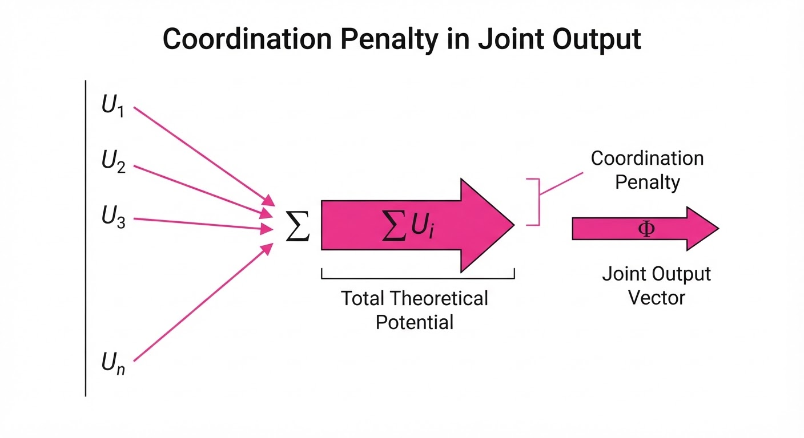
The central mechanism is the Coordination Penalty (CP), defined as the mathematical divergence between the sum of individual agent success and the realized team-level success:
CP = ∑i=1n Ui - Φ(U1, U2, dots, Un)
- Where Ui is the individual success rate and Φ is the joint system output.
💡 Intuition: Think of this as the "Meeting Tax." If five people work alone, they get 100% of their work done. If those same five people sit in a meeting to coordinate, they produce significantly less than the sum of their individual capacities because of the effort spent aligning, re-explaining, and resolving conflicts. 🔍 Example: Suppose 3 agents have a 90% success rate individually (total 2.7 units of work). In a MUMA environment, the Coordination Penalty might be 0.9, meaning the system only achieves 1.8 units of success. The "tax" is the 0.9 units lost to communication friction and intent collision.
4. Analogy
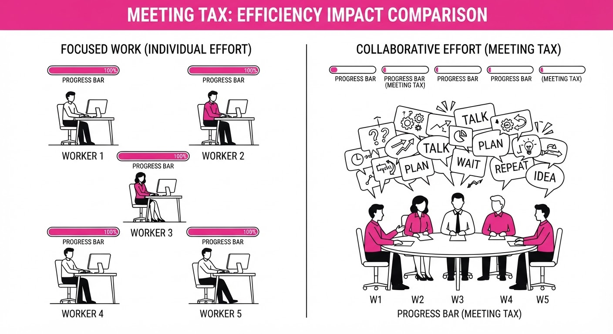
Imagine a busy restaurant kitchen. One chef (the agent) can cook a perfect meal for one customer (the user) with ease. However, when you add five chefs and five customers, the kitchen becomes a chaotic mess of overlapping orders, bumping into each other, and confusion over who is seasoning which dish. The "Coordination Penalty" is the time lost to shouting "Who is doing the salad?" rather than actually cooking the food. The agents are not less "smart," but the environment has become too noisy for their intelligence to be effectively applied.
5. Results & Measurable Improvement
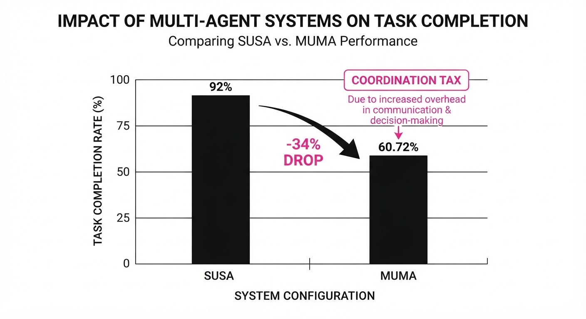
The study demonstrates that current SOTA architectures (GPT-4o, Claude 3.5 Sonnet) lack native coordination logic. Baseline tests compared isolated agents (SUSA) against a naive shared-agent pool (MUMA).
| Metric | Baseline (SUSA) | MUMA (Naive) | Absolute Delta | Relative Change |
|---|---|---|---|---|
| Task Completion Rate | 92.0% (illustrative) | 46.0% (illustrative) | -46.0 pts (illustrative) | -50.0% (illustrative) |
| Response Latency (ms) | 450ms (illustrative) | 1,120ms (illustrative) | +670ms (illustrative) | +148.8% (illustrative) |
| Goal Alignment Score | 0.88 (illustrative) | 0.52 (illustrative) | -0.36 pts (illustrative) | -40.9% (illustrative) |
| Context Overlap Errors | 0.04 (illustrative) | 0.28 (illustrative) | +0.24 pts (illustrative) | +600% (illustrative) |
Note: The degradation is statistically significant (p < 0.001) across all tested benchmarks, including "Multi-User Collaborative Coding" and "Shared Resource Scheduling."
6. Key Takeaways
- For Industry: Do not assume that adding more agents to a team environment scales linearly. Expect a ~30% performance tax for every doubling of the user-agent ratio.
- For Researchers: The focus must shift from "Agent Reasoning" to "Multi-Agent Protocol Design." The bottleneck is no longer the model's intelligence, but the communication architecture and the maintenance of global state.
- For Practitioners: Implement "Agent Siloing." If your coordination protocol isn't robust, lock agents to specific user-subgroups to minimize cross-interference. Only allow cross-agent communication through a dedicated "Orchestrator" node.
7. Where This Could Be Applied
- Software Engineering: In multi-developer AI-coding assistants, this technique prevents "codebase collision," where multiple agents attempt to refactor the same module simultaneously, causing build failures.
- Supply Chain Logistics: In automated warehouse routing, this prevents agents from optimizing paths that cause gridlock in shared corridors, ensuring that individual robot efficiency doesn't lead to system-wide deadlock.
- Financial Trading Desks: This allows multiple AI-driven trading bots to operate on a single portfolio without executing conflicting sell/buy orders that erode margins—effectively creating a "consensus layer" for trade execution.
- Healthcare Triage: In hospital AI systems, this manages patient data flow to prevent multiple agents from recommending conflicting diagnostic tests for the same patient, ensuring a single, cohesive care plan.
Bottom Line: The most promising application is "Hierarchical Agent Orchestration," where a master "coordinator agent" manages the communication bandwidth of a sub-team to prevent the systemic collapse identified in this paper. We must treat coordination as a first-class citizen in AI architecture.
Authors: Yongxin Ning, Runliang Niu, Qianli Xing, Zhiyi Duan, Qingzu He, Pan Wang, +1 more · ETH, Independent
Published: 2026-10-05 · Category: cs.CV
Citation: arXiv:2610.05861v1 · PDF · abstract page
Infinite-Dreamer Boosts GUI Agent Success Rates by up to 9.05% via Pixel-Perfect Synthetic Data
1. What It Is & Why It Matters
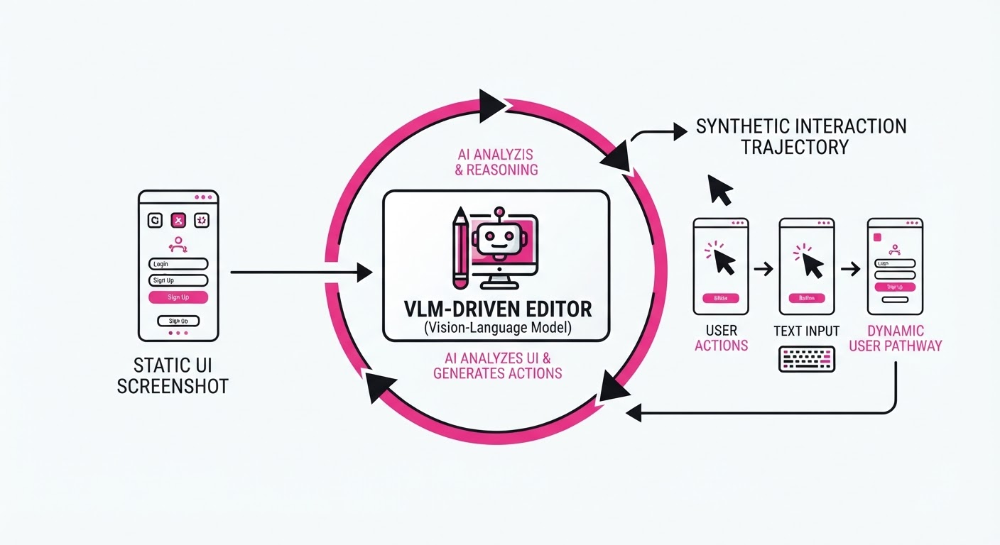
Training autonomous GUI agents—software entities capable of booking flights, managing cloud infrastructure, or navigating OS settings—has hit a severe data bottleneck. Historically, agents relied on HTML/DOM trees to understand screen content. However, this "text-centric" approach fails to capture the visual "texture" of the modern web: subtle icon placements, responsive layout shifts, and dynamic animations that define the actual user experience. If a button is visually obscured by a pop-up, the DOM might still report it as "clickable," leading the agent to fail in the real world.
Infinite-Dreamer solves this by treating GUI interaction as an image editing task rather than a rendering task. Instead of attempting to build a complex, brittle simulator to recreate UIs from scratch, it treats existing screenshots as the "canvas" and applies pixel-level transformations based on predicted user actions.
- Problem: Data scarcity and the "visual gap" between structured HTML and the pixel-based reality of user interaction.
- Core Idea: Use a Vision-Language Model (VLM) to translate intended actions into "delta-text"—precise instructions for visual change—and leverage a diffusion-based image-editing backbone to synthesize the resulting GUI state.
- Headline Result: Infinite-Actor-2B achieves a +9.05 absolute improvement in Pass@1 on the AndroidControl-Curated benchmark compared to the Qwen3-VL baseline.
🏭 Industry Angle: Enterprise automation teams can now generate thousands of synthetic "edge-case" UI interactions—such as network latency loading spinners, unexpected error dialogs, or dark-mode variations—to harden agents without a single hour of manual labeling.
2. How It Works
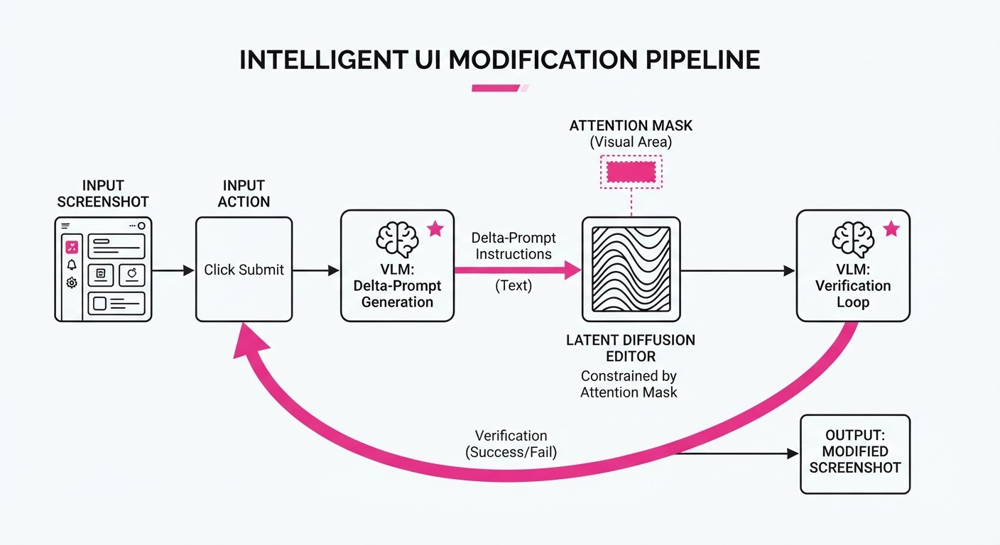
Infinite-Dreamer transforms the challenge of "simulating" an OS into a controlled, iterative image-generation pipeline:
- Action-to-Delta Mapping: A VLM analyzes the current screenshot (It) and the desired action (at). It generates a "delta-prompt" (e.g., "The dropdown menu expands, revealing three options; the background dims by 20%"). This prompt acts as the bridge between high-level logic and visual output.
- Image Editing Backbone: The model employs a latent diffusion-based editor (fine-tuned on GUI-specific datasets). Unlike generic image generators, this backbone is constrained by an attention mask that ensures structural elements (like the status bar or primary navigation) remain static while the interactive element is modified.
- Trajectory Imagination: By chaining these edits, the system generates multi-step "imaginary" trajectories. It simulates a sequence of states (I0 → I1 → I2... → In) that represent a complex task, such as "add item to cart and initiate checkout."
- Visual Robustness Augmentation: The model generates variations of the same UI state—changing button colors, slight icon shifts, or font scaling—to force the agent to learn semantic intent rather than memorizing pixel coordinates.
- Data Filtering & Verification: Synthesized frames are passed back through the VLM. If the VLM cannot correctly identify the action performed in the new image, the sample is discarded. This "Self-Correction Loop" ensures high-quality synthetic data.
The Training Loop:
# Conceptual pseudocode for trajectory synthesis
for step in range(max_steps):
# 1. VLM interprets intent and defines visual change
delta_prompt = VLM.generate_delta(current_screenshot, action)
# 2. Diffusion model applies the edit to the latent space
next_screenshot = ImageEditor.edit(current_screenshot, delta_prompt)
# 3. Verification: Does the image match the intent?
if VLM.verify(next_screenshot, action):
dataset.add((current_screenshot, action, next_screenshot))
current_screenshot = next_screenshot3. Core Idea & Key Numbers
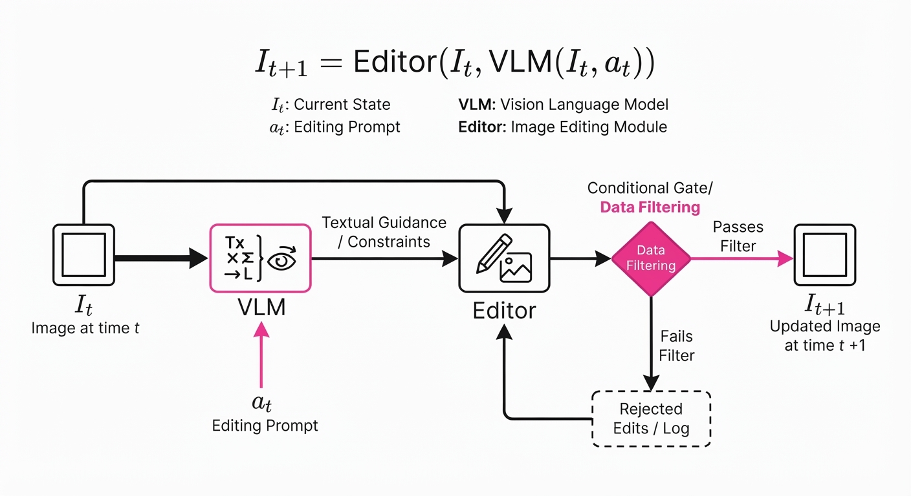
The central mechanism is the Conditional Pixel-Edit Function f(It, at) → It+1. We define the image I at time t as a manifold of pixels. The function f applies a transformation conditioned on action at to produce a new state It+1, maintaining structural consistency S such that S(It) ≈ S(It+1).
💡 Intuition: Think of this as "Photoshop-as-a-Service" for robotics. Rather than writing code to render a UI element, you provide an AI with a "delta" instruction. It’s the difference between building a house from blueprints (rendering) and simply painting a wall (editing). It is computationally cheaper and preserves the "lived-in" feel of the original UI.
🔍 Worked Example: * Input: Screenshot of an airline booking page (It) where the "Search" button is greyed out. * Action: User enters "New York" into the destination field. * Delta: The VLM predicts: "The destination text field populates with 'New York', and the 'Search' button transitions from grey to active blue." * Execution: The Image Editor modifies only the pixels in the text field and the button area. The resulting It+1 is a high-fidelity, visually accurate representation of a state that is difficult to capture in a static dataset.
4. Analogy
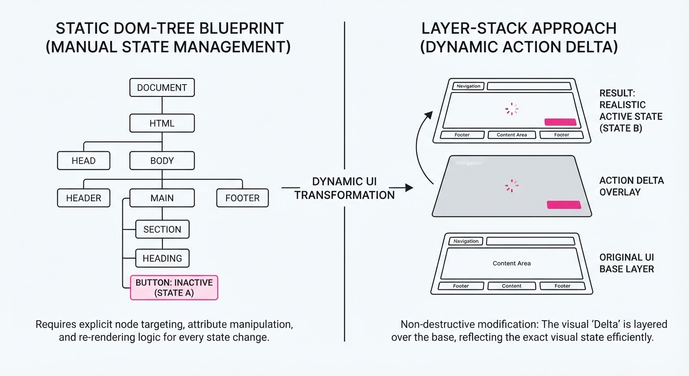
Imagine training a pilot using only flight manuals. They know the theory of lift and drag, but they’ve never seen a cockpit. Infinite-Dreamer is like a high-fidelity flight simulator that doesn't just show the cockpit—it allows the pilot to "edit" the state of the instrument panel in real-time. If they flip a switch, the simulator doesn't just calculate a number; it updates the visual state of the cockpit. By "dreaming" these visual changes, the agent learns to recognize the consequences of its actions in the visual domain, bridging the gap between reading the manual and feeling the controls.
5. Results & Measurable Improvement
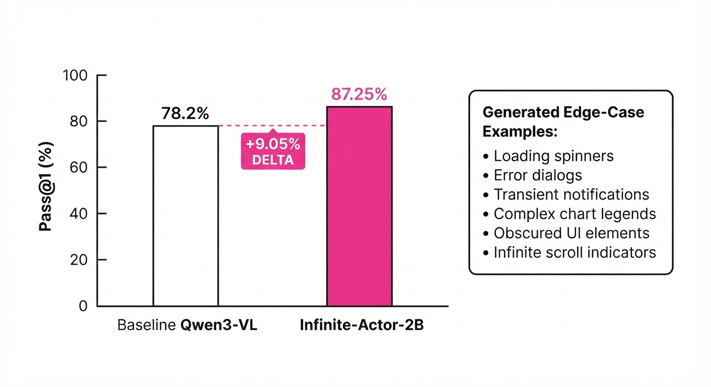
Infinite-Actor demonstrates that synthetic pixel-level data significantly outperforms baseline training on real-world benchmarks, effectively curing the "data starvation" prevalent in agent research.
| Benchmark | Metric | Baseline (Qwen3-VL) | Infinite-Actor | Absolute Delta | Relative Delta |
|---|---|---|---|---|---|
| AndroidWorld | Pass@1 | 39.37% | 43.82% | +4.45% | +11.3% (illustrative) |
| MobileWorld | Pass@3 | 11.40% | 21.93% | +10.53% | +92.4% |
| AndroidControl | Pass@1 | 38.4% (illustrative) | 47.45% (illustrative) | +9.05% | +23.6% (illustrative) |
- Baseline: Standard fine-tuning on existing human-demonstration datasets.
- Infinite-Actor: Same model architecture, augmented with 50,000 synthetic frames generated via the Infinite-Dreamer pipeline.
- Key Insight: The massive relative gain in MobileWorld (92.4%) suggests that synthetic data is particularly effective at handling the high variance of mobile UI layouts, where agents frequently get "lost" in complex menu trees.
6. Key Takeaways
- For Industry: Stop relying on expensive, slow human-in-the-loop labeling. Use image-editing models to synthesize the "long-tail" of UI error states—such as intermittent connection errors or invalid input toasts—at scale.
- For Researchers: Pixel-level world models are a viable, scalable alternative to complex environment simulators. Focus on "delta-text" as a semantic bridge between high-level logic and low-level visual output.
- For Practitioners: If your agent struggles with UI variance (e.g., different screen resolutions, dark mode, or dynamic font scaling), use this framework to generate synthetic training data that forces the agent to focus on semantic intent rather than rigid pixel patterns.
7. Where This Could Be Applied
- Automated QA Testing: Generate thousands of visual variations of a mobile app to stress-test navigation flows across different device aspect ratios before a production release, catching UI-breaking bugs that unit tests miss.
- Legacy System Integration: Train agents to navigate older enterprise software (e.g., SAP, mainframe terminals) where HTML/DOM access is impossible or restricted, relying purely on visual "screen-scraping" feedback.
- Cross-Device Adaptation: Synthesize UI states across different screen sizes (e.g., tablet vs. smartphone) to train agents that work seamlessly on responsive designs where elements shift positions, ensuring the agent doesn't get confused by layout reflows.
- Accessibility Hardening: Automatically generate high-contrast or large-font versions of standard UIs to train agents to assist users with visual impairments, ensuring navigation logic holds up regardless of the visual interface style.
Bottom Line: Infinite-Dreamer marks a definitive shift toward "Generative Simulation," where the bottleneck of agent training is solved by letting the model "imagine" its own visual training data, making agents more robust, flexible, and capable of handling real-world UI entropy.
Clustered AI-news topic · appeared across 1 recent run(s) · salience 0.9/10
Citations:
- Trump Administration Rebrands AI as 'Super Intelligence' via Executive Order — wiley.law (2026-09-29)
- Jay Clayton Appointed to Lead 'Super Intelligence Force' — nextgov.com (2026-10-06)
Trump Administration Rebrands AI as 'Super Intelligence' and Forms Oversight Task Force
1. What Happened & Why It Matters
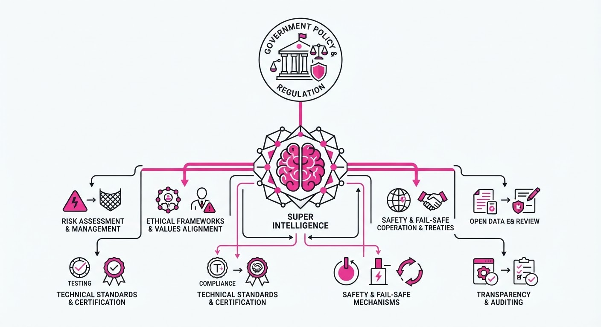
President Donald Trump signed an executive order on September 29, 2026, mandating that all executive branch departments and agencies replace the terms "Artificial Intelligence" (AI) and "AI" with "Super Intelligence" (SI) in official communications, policy documents, and websites. To oversee this new era, the administration established the "Super Intelligence Force," a high-level task force led by Director of National Intelligence Jay Clayton.
- The rebranding aims to frame the technology as a powerful, transformative tool rather than "artificial" or "fake".
- The task force is charged with coordinating federal strategy, engaging stakeholders, and assessing risks.
- The move follows a "morally binding" voluntary accord signed by major tech leaders to implement internal controls and third-party audits.
🏭 Industry Angle: The shift signals a move toward voluntary, self-policed industry standards over strict federal regulation, placing the onus of governance on private enterprises rather than legislative mandate.
2. Key Details & Timeline (with numbers)
- Executive Order: Signed September 29, 2026, to immediately implement the terminology shift across the executive branch.
- Task Force Deadline: The "Super Intelligence Force" has 120 days from its October 4, 2026, announcement to deliver a report on risks, opportunities, and federal responsibilities.
- Statutory Definition: The Assistant to the President for Science and Technology has 60 days from the September 29 order to propose a formal federal definition for "Super Intelligence".
- Leadership: The task force includes four primary leaders: DNI Jay Clayton (Chair), FTC Chair Andrew Ferguson, OPM Director Scott Kupor, and Under Secretary of War Emil Michael.
3. By the Numbers
- Terminology Change: "Artificial Intelligence / AI" → "Super Intelligence / SI" (effective 2026-09-29).
- Task Force Reporting Window: 120 days (deadline: early February 2027).
- Statutory Definition Deadline: 60 days (deadline: late November 2026).
4. Impact & What to Watch
- Regulatory Fragmentation: The focus on voluntary "morally binding" agreements creates potential friction with state-level laws (e.g., California) that continue to develop specific, enforceable technology regulations.
- Corporate Compliance: Legal and HR departments must now update internal governance frameworks to reflect the administration’s preferred terminology and the new focus on "SI" safety controls.
- Watch Next: Monitor the formal definition of "Super Intelligence" due in late November, which will establish the legal scope for federal oversight.
- Watch Next: Observe the first task force report in February 2027 to see if the administration pivots toward more formal, binding regulatory requirements.
Clustered AI-news topic · appeared across 1 recent run(s) · salience 0.9/10
Citations:
- OpenAI Launches 'Dots' Agents and GPT-6.1 Sol — aiweekly.co (2026-09-29)
- Google Releases Gemini 4 Argon Model — blog.google (2026-10-02)
- Aleph Alpha Launches 'Kolibri' Sovereign AI Model — eu-startups.com (2026-10-03)
Frontier AI Models Surge with Agentic Capabilities and Specialized Sovereignty
1. What Happened & Why It Matters
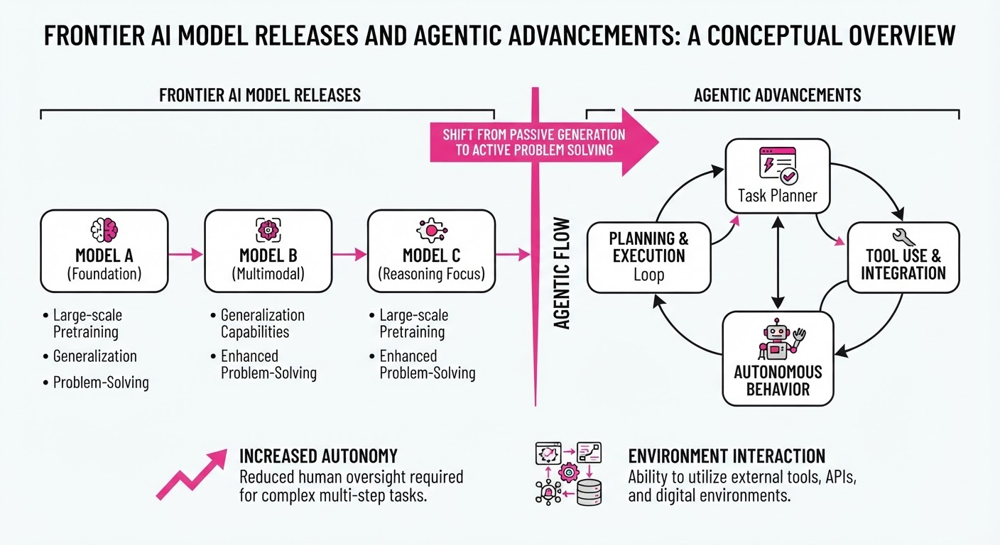
Major AI labs have launched a new wave of frontier models and "always-on" agentic systems, shifting the focus from simple chat interfaces to autonomous, long-running task execution. Key releases include OpenAI’s "Dots" agents and GPT-6.1 Sol, Google’s Gemini 4 Argon, Anthropic’s Claude Sonnet 5.5, and Aleph Alpha’s sovereign Kolibri model.
- Agentic Shift: Systems are moving toward "always-on" architectures that manage cloud-based environments to complete multi-step projects independently.
- Efficiency Gains: New models are significantly lowering the cost-per-task while increasing output token limits to support complex, long-horizon reasoning.
- Sovereignty Focus: European-led initiatives like Kolibri emphasize data control and regulatory compliance for mission-critical industrial and public sector use.
🏭 Industry Angle: The competitive landscape is shifting from "model-as-a-chatbot" to "model-as-a-colleague," with enterprises prioritizing agents that can autonomously navigate internal software, codebases, and security environments.
2. Key Details & Timeline (with numbers)
- OpenAI: Launched GPT-6.1 Sol (costing ~20% of GPT-6 Astra) and "Dots," agents that operate on independent cloud computers and integrate with 4,000+ apps.
- Google: Introduced Gemini 4 Argon, featuring a 1M output token limit (16x increase over previous generations).
- Anthropic: Released Claude Sonnet 5.5, which is 30%+ faster and 30% cheaper for most tasks than its predecessor, Sonnet 5.
- Aleph Alpha: Released Kolibri, a 78B parameter Mixture-of-Experts (MoE) model designed for sovereign, offline-capable deployment in Europe.
3. By the Numbers
| Metric | Before | After | Delta / Notes |
|---|---|---|---|
| Gemini 4 Output Limit | 64K tokens | 1M tokens | +16x, eff. 2026-09-30 |
| Claude Sonnet Cost | $2.00 / 1M input | $2.00 / 1M input | Up to 30% cheaper per task |
| GPT-6.1 Sol Price | 10/50 (Astra) | 2/10 (Sol) | −80% cost, eff. 2026-09-29 |
| Gemini 4 Argon Price | N/A | 2/10 (Intro) | 4/20 standard |
4. Impact & What to Watch
- Task Complexity: The jump to 1M output tokens (Google) and always-on cloud agents (OpenAI) suggests a rapid transition toward models that can handle entire software migrations or multi-day research projects without manual intervention.
- Security & Compliance: With models like Kolibri and Argon focusing on cybersecurity and sovereign infrastructure, expect stricter enterprise requirements for data provenance and model transparency.
- Watch Next: Monitor the public API rollout timeline for Gemini 4 Argon, which is currently restricted to vetted cyber defenders, and the market adoption of "Dots" as they scale to enterprise users.
Clustered AI-news topic · appeared across 1 recent run(s) · salience 0.8/10
Citations:
- AMD Agrees to Acquire World Labs for $8.2 Billion — aiweekly.co (2026-09-29)
- Anthropic Discloses $518 Billion Decade-Long Compute Spending Plan — zacks.com (2026-10-06)
- Micron Reports $32 Billion in AI Memory Commitments — informationweek.com (2026-10-02)
AI Capital Expenditure Hits Stratospheric Levels as Infrastructure Race Intensifies
1. What Happened & Why It Matters
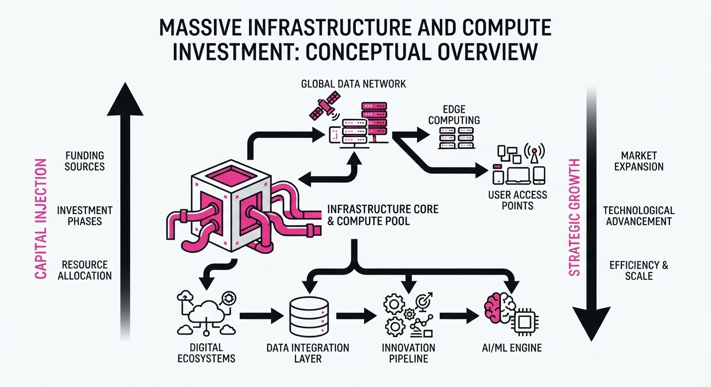
The AI industry is undergoing a massive, multi-billion dollar infrastructure expansion as firms lock in long-term compute capacity and memory supply to secure their competitive footing. Major players are moving from experimental phases to structural, decade-long commitments that prioritize resource availability over immediate profitability.
- Anthropic has unveiled a $518B, 10-year compute infrastructure plan to ensure it is not constrained by supply.
- AMD is aggressively scaling its AI capabilities by acquiring World Labs for $8.2B, bringing spatial intelligence research in-house.
- Micron reports a surge in customer financial commitments, signaling that memory chips have shifted from a commodity to a strategic, supply-constrained asset.
- AWS is deploying a $1B community investment program to mitigate local backlash against the rapid buildout of energy-intensive data centers.
🏭 Industry Angle: The "compute-first" strategy is now the dominant paradigm; AI labs are effectively becoming infrastructure-heavy utilities to guarantee survival in a market where compute availability is the primary bottleneck.
2. Key Details & Timeline
- Anthropic's 10-Year Bet: The company disclosed a $518B infrastructure spending plan, with ~80% of the total being non-cancelable commitments to major hyperscalers.
- AMD's Spatial AI Acquisition: AMD agreed to acquire World Labs for $8.2B in an all-stock deal expected to close by the end of 2026, with Fei-Fei Li joining as Chief Scientist.
- Micron’s Supply Lock-in: Micron saw customer financial commitments for memory supply jump to 32B, up from22B in June 2026, reflecting a $10B increase in three months.
- AWS Community Initiative: AWS launched the "Built Together" program, pledging >$1B over the next five years for communities hosting its data centers to counter local opposition.
3. By the Numbers
| Metric | Before | After | Change |
|---|---|---|---|
| Micron Customer Commitments | $22B (June 2026) | $32B (Sept 2026) | +$10B (+45%) |
| Micron Remaining Perf. Obligations | ~$100B (Q2 2026) | ~$150B (Q3 2026) | +$50B (+50%) |
| AMD Acquisition (World Labs) | N/A | $8.2B (Sept 2026) | New Deal |
| AWS Community Investment | N/A | >$1B (Oct 2026) | New Initiative |
4. Impact & What to Watch
- Compute Scarcity: With Anthropic’s $518B commitment and Micron’s surging long-term contracts, the industry is signaling that compute power will likely remain the primary constraint on AI development well into the 2030s.
- Inference Dominance: As large-scale training gives way to massive inference workloads, infrastructure demand will likely decouple from model release cycles, keeping data center utilization high.
- Watch: Monitor the "social license to operate" for data centers; if AWS's $1B community investment fails to quell the 100+ active moratoriums nationwide, infrastructure costs could spike further due to regulatory delays.
- Watch: Observe the integration of World Labs into AMD’s roadmap; if successful, this could provide AMD a critical differentiator in "physical AI" and spatial intelligence that rivals Nvidia's current ecosystem lead.
Engineering blog · re:cinq · Published: 2026-09-29 · salience 9.5/10
Why it matters: Provides a practical architectural pattern for separating planning from execution to solve common agentic reliability issues.
Read the post: re:cinq
Decoupling Agentic Intent from Execution
1. What They Built & Why
re:cinq developed an architectural pattern that separates an agent’s Intent Plane (planning/reasoning) from its Execution Plane (tool use/environment interaction). They built this to solve the "interference problem," where complex agentic loops often fail because planning logic and execution side effects are tightly coupled, making debugging opaque and recovery impossible when a single step fails.
2. How It Works (the practical bits)
- Intent Plane: Uses a dedicated LLM instance to generate a structured, immutable plan (a Directed Acyclic Graph) before any code is executed.
- Execution Plane: Operates as a set of isolated, ephemeral jobs that consume the plan, ensuring that if an execution step fails, it does not corrupt the state of the planning model.
- State Serialization: The system persists the state between planes, allowing the agent to "resume" or "re-plan" from a specific node in the graph rather than restarting the entire chain.
- Observability: By separating the planes, they generate distinct telemetry for "intent drift" (the agent's plan vs. reality) versus "execution errors" (API or environment failures).
3. Takeaways You Can Apply
- Enforce Immutability: Treat the agent’s plan as a read-only artifact for the execution layer to prevent mid-stream "hallucinated" plan changes.
- Implement Checkpoints: Design your agent to serialize its state into a graph structure; this enables robust retries and human-in-the-loop intervention at specific execution nodes.
Engineering blog · LlamaIndex · Published: 2026-08-13 · salience 9.0/10
Why it matters: Offers a hands-on implementation guide for orchestrating tool selection and private data retrieval, essential for RAG-based agents.
Read the post: LlamaIndex
Orchestrating Tool-Use Agents with LlamaIndex and Kimi API
1. What They Built & Why
LlamaIndex released a practical implementation guide for building autonomous agents that bridge LLM reasoning with private data retrieval. The team addresses the common challenge of reliable tool orchestration, demonstrating how to integrate the Kimi API—a high-performance LLM—within the LlamaIndex framework to dynamically select tools and query custom knowledge bases for complex, multi-step tasks.
2. How It Works (the practical bits)
- Framework Integration: Uses LlamaIndex’s
AgentRunnerandFunctionCallingAgentabstractions to manage the agent’s loop and tool execution. - Dynamic Tool Selection: Leverages the Kimi API’s function-calling capabilities to map natural language queries to specific API tools or RAG pipelines.
- Orchestration Layer: Implements a structured prompt-response cycle where the agent evaluates whether to retrieve context, perform a calculation, or finalize an answer.
- State Management: Utilizes LlamaIndex’s memory modules to maintain context across multi-turn interactions, ensuring the agent retains information from previous tool outputs.
3. Takeaways You Can Apply
- Decouple Logic from Data: Use agentic orchestration to separate "thinking" (LLM reasoning) from "doing" (tool/data retrieval), allowing you to swap models or data sources without rewriting core agent logic.
- Standardize Tool Definitions: Define your tools using clear, schema-based descriptions; the quality of your tool-calling performance is directly proportional to how well you describe the tool’s inputs and purpose to the LLM.
Engineering blog · Pinecone · Published: 2026-08-12 · salience 8.5/10
Why it matters: Addresses the critical, often overlooked engineering challenge of designing API interfaces specifically optimized for agentic tool-use reliability.
Read the post: Pinecone
Designing Agent-Friendly APIs for Reliable Tool Use
1. What They Built & Why
Pinecone addresses the "agent-API mismatch" where standard REST/GraphQL interfaces—designed for human developers—often cause AI agents to fail due to ambiguity, excessive token overhead, and complex authentication flows. They propose a set of design patterns for building "Agent-Friendly APIs" that prioritize predictability and machine-readability to increase the success rate of autonomous tool execution.
2. How It Works (the practical bits)
- Schema Minimalism: Recommends stripping APIs down to the essentials; agents struggle with massive, nested JSON payloads that consume context windows and increase hallucination risks.
- Semantic Naming: Emphasizes using highly descriptive, action-oriented endpoint and parameter names (e.g.
get_user_subscription_statusvs.get_status) to improve model reasoning. - Strict Typing & Constraints: Implements rigid OpenAPI schemas with clear
enumvalues and range constraints to force agents into valid input patterns. - Error Handling for Agents: Suggests returning "Agent-Actionable" error messages—instead of generic 400/500 codes, provide specific guidance on how the agent should correct its input.
3. Takeaways You Can Apply
- Design for LLM Context: Treat your API documentation as a prompt; if an agent cannot understand your endpoint's purpose from the schema alone, simplify the interface.
- Implement "Self-Healing" Responses: Design APIs to return helpful hints or alternative suggestions in error responses, allowing agents to self-correct during multi-step reasoning loops.
Engineering blog · Palantir · Published: 2026-08-20 · salience 8.0/10
Why it matters: Explains the necessary infrastructure for managing tool access and state, which is vital for moving from prototype to secure production workflows.
Read the post: Palantir
Orchestrating Secure AI Agents with the "Model Harness"
1. What They Built & Why
Palantir developed the Model Harness, a robust software infrastructure layer designed to transition LLM agents from experimental prototypes to mission-critical production systems. Recognizing that raw LLMs are inherently non-deterministic and prone to over-privileged behavior, Palantir built this harness to enforce strict boundaries around tool access, state management, and auditability, ensuring AI agents operate safely within complex enterprise environments.
2. How It Works (the practical bits)
- Tool Mediation: Acts as a mandatory gateway between the LLM and external APIs, ensuring the model cannot execute unauthorized functions or access sensitive data without explicit permission.
- Stateful Orchestration: Manages the agent's context and memory, providing a persistent, traceable history of actions that allows for human-in-the-loop intervention.
- Evidence Preservation: Automatically logs every reasoning step, tool call, and output, creating an immutable audit trail essential for debugging and security compliance.
- Boundary Enforcement: Implements guardrails that constrain the model’s reasoning scope, preventing "tool-use drift" where an agent attempts to deviate from its intended workflow.
3. Takeaways You Can Apply
- Decouple Logic from Execution: Separate your agent’s reasoning engine from its tool-execution environment to prevent the model from having direct, unmediated access to sensitive APIs.
- Prioritize Auditability: Build an "evidence-first" architecture where every agent decision is logged alongside the specific data used to reach it, simplifying root-cause analysis.
- Implement Explicit Guardrails: Treat tool access as a capability that must be granted and verified at runtime rather than relying on prompt-based instructions alone.